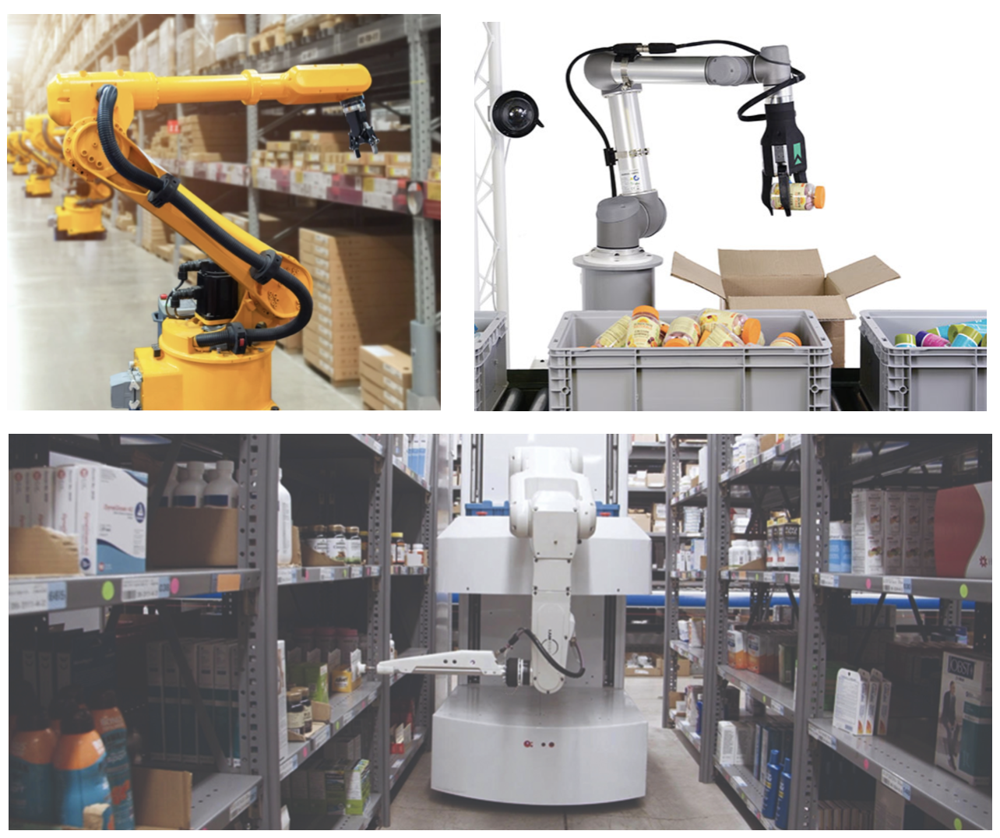
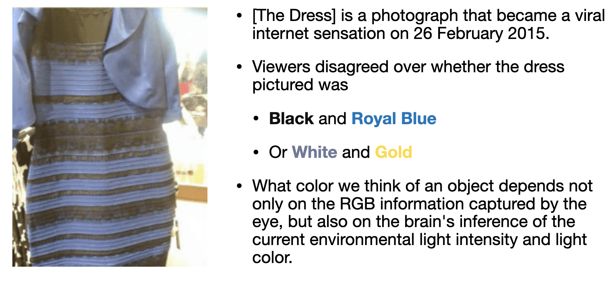
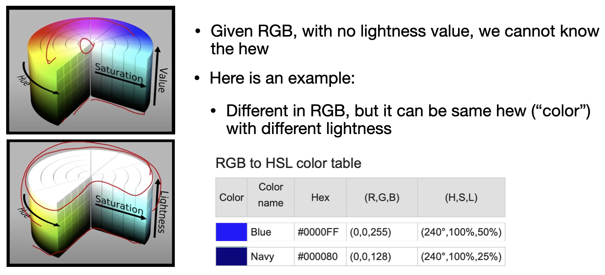
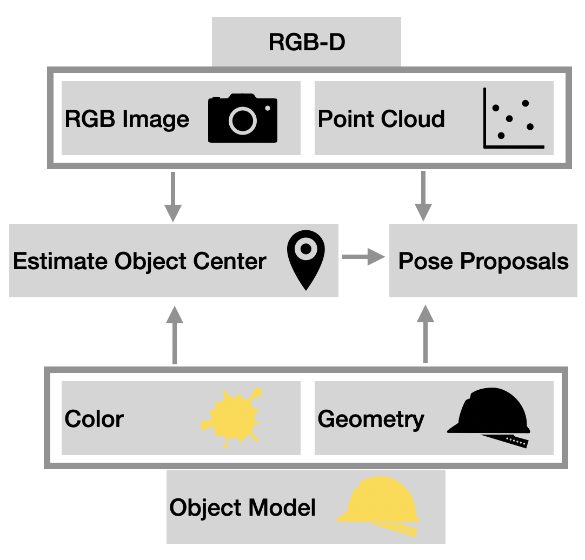

Intelligent warehouse is a promising area, and predicting object poses is a critical task.

In the scenario of smart warehousing, it generally has the following characteristics:
Known object
Object types often change
Each warehouse has different conditions (lighting, object types)
Current mainstream object detection and location approaches rely on neural networks, which may have the following problems:
[1] For each new scenario, a corresponding training data set needs to be established (Which could be expensive, especially for 6DOF pose labeling).
[2] When there is a change in the scene (Eg: the light becomes stronger), it is necessary to RE-establish the data set and RE-train a new neural network.
Observation
I revisited the way neural networks recognize objects.
[1] Color information, provided by RGB images and label data.
[2] Pattern information, that is, the surface texture information of the object of interest.

Through further understanding, I found that the colors we usually talk about can be divided into hue, saturation, and luminance.
Interestingly, in different luminance situations, different hues may show the same RGB.

PROPOSED APPROACH

In order to solve the above-mentioned problems, we propose an object detection method based on RGB-D data and object 3D model.
Our method first rendering different object poses in the scene, comparing the rendered synthesis point cloud with the collected observed point cloud, and selecting the most similar pose as the predict pose.
Unlike other learning-based approaches, it does not require a training process. For new scenes, we can scan the object through the RGB-D sensor to build new 3D model of the object under the new lighting condition.
For light-stable scenes (EG: warehouses), this type of method is quick and easy to implement.
ONGOING PROJECT
Build New Object 3D Model
Collect RGB-D Data
[Interesting Topics] Geometry Representation
Along with the research, since we were always chasing real-time performance, describing geometry information efficiently is an essential task for us.